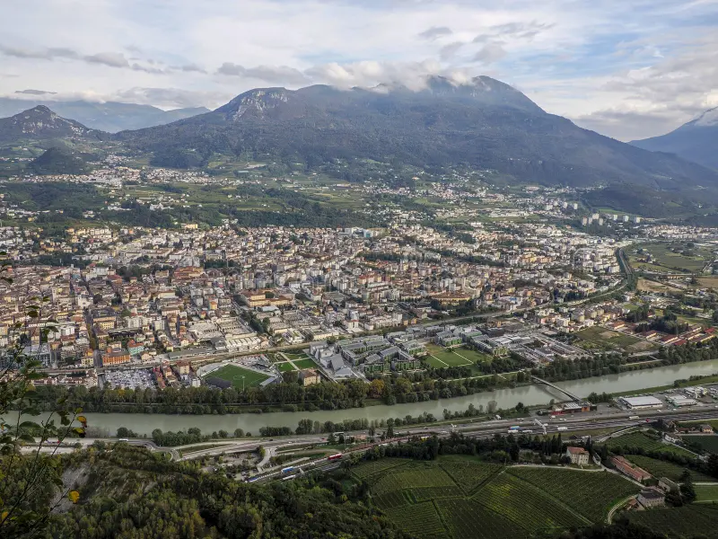

Home
Chi siamo
Service
Eventi
Collaborazioni con il Rotary
Contatti

Rotaract Susca
Unisciti a noi per fare la differenza!
Scopri di più!
Benvenuti al Rotaract
Il nostro impegno per Milano dal 1968. Scopri i nostri progetti, eventi e collaborazioni.